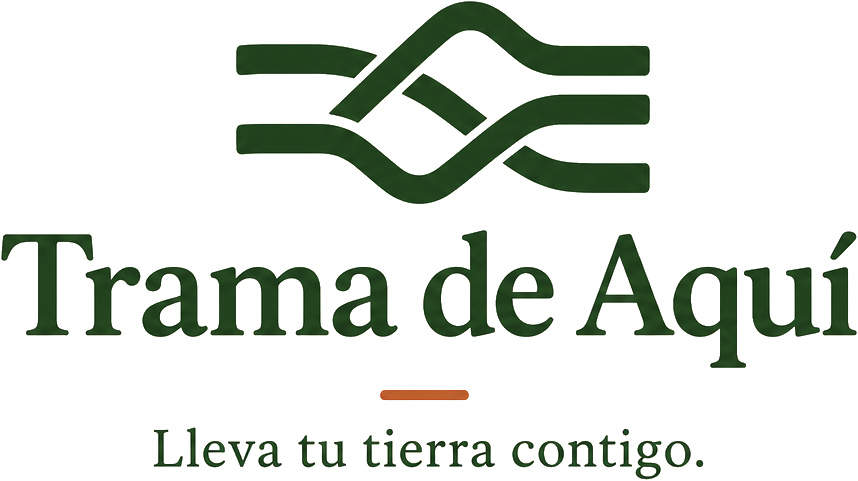

Nuestra historia
Hecho en Santander, para llevar tu tierra contigo
Trama de Aquí nació de una idea sencilla: que cada quien pueda llevar su tierra consigo. Santander es cañón y páramo, es cacao, café y hormiga culona, es Barichara de piedra y la fuerza de los comuneros. Todo eso cabe en un bolso de lona que usas todos los días.
El nombre lo dice: trama es el hilo que cruza el tejido y le da forma, y de aquí es de esta tierra. Unimos las dos cosas: diseños con alma de Santander, estampados en lona de algodón resistente, pensada para el mercado, la universidad o el viaje.
Cada bolso se hace bajo pedido y puede ir con una tarjeta y tu mensaje. No es solo un accesorio: es un pedacito de tu tierra para ti o para quien está lejos y la extraña.
Aquí va tu toque personal: tu nombre, tu foto y por qué empezaste Trama de Aquí. Eso es lo que más conecta con la gente. Dímelo y lo escribo contigo.

Nuestra misión
Llevar el orgullo de la tierra a la vida diaria: diseñar y producir bolsos de lona que celebran los pueblos, paisajes, sabores y raíces de Colombia, para que cada persona lleve lo suyo con orgullo y calidad honesta.
Nuestra visión
Ser la marca que los colombianos eligen para llevar su tierra consigo: reconocida por diseños con alma, hechos localmente y presentes en todo el país y donde haya un colombiano lejos de casa.
Lo que nos mueve
Nuestros valores
Hecho en Santander
Diseñado y producido aquí, celebrando lo nuestro.
Lona que dura
Algodón resistente, lavable y con asas reforzadas.
Diseños con alma
Pueblos, paisajes, sabores y raíces guanes de la región.
Listo para regalar
Lo empacamos con tarjeta y tu mensaje, si quieres.
Prueba social
Lo que dicen de Trama de Aquí
Estos son ejemplos de plantilla. Cuando tengas reseñas reales de tus clientes, reemplázalas aquí (o conéctalas a tu Instagram).
«La lona es de verdad buena y el diseño de Barichara quedó hermoso. Me lo llevo a todo lado.»
«Se lo regalé a mi mamá que vive lejos y lloró. Un pedacito de su tierra.»
«Pedí y llegó rapidísimo, bien empacado y con tarjeta. Volveré a comprar.»